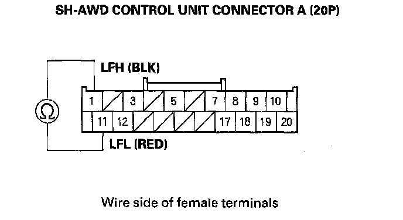
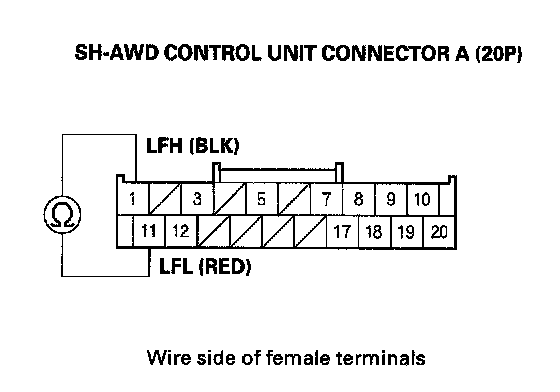
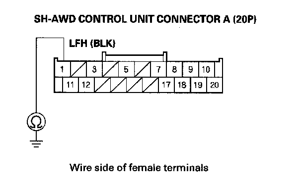
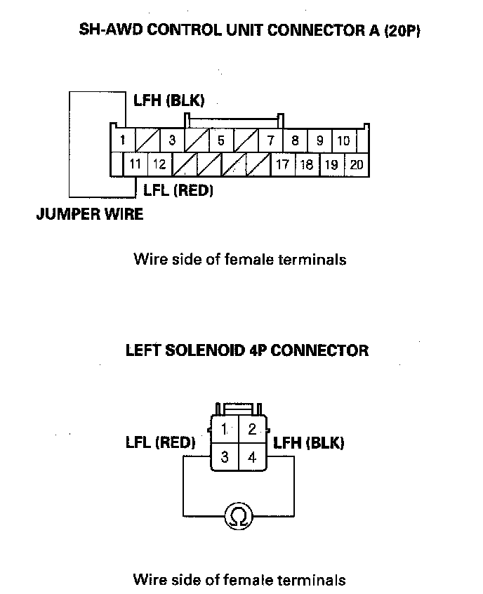
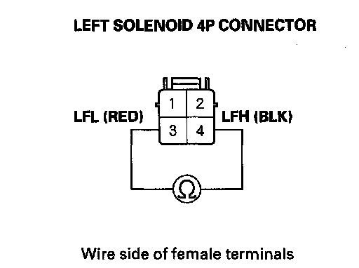

DTC 81-1
DTC 81-1: Left Search Coil Sensor MalfunctionNOTE: Before you troubleshoot, review the general troubleshooting information.
1. Disconnect SH-AWD control unit connector A (20P).
2. Check for continuity between SH-AWD control unit connector terminals A1 and A11.

Is there continuity?
YES - Go to step 3.
NO - Go to step 6.
3. Check the REAR DIFFERENTIAL FLUID TEMPERATURE in the DATA LIST is above 68°F (20°C) with the HDS before proceeding to the next step. If the temperature is below 68°F (20°C) drive the vehicle to warm up the rear differential until the fluid temperature becomes above 68°F (20°C).
4. Measure resistance between SH-AWD control unit connector terminals A1 and A11.

Is there 2.0 Ohms or more?
YES - Go to step 5.
NO - Go to step 7.
5. Check for continuity between SH-AWD control unit connector terminal A1 and body ground.

Is there continuity?
YES - Repair short in the wire between SH-AWD control unit connector terminal A1 and body ground.
NO - Check for loose connector terminals at the SH-AWD control unit and repair if necessary. If the connections are OK, update the SH-AWD control unit if it does not have the latest software or substitute a known-good SH-AWD control unit and recheck. If the symptom/indication goes away with the updated SH-AWD control unit, troubleshooting is complete. If the symptom/indication goes away with a known-good SH-AWD control unit, replace the original SH-AWD control unit.
6. Connect a jumper wire between SH-AWD control unit connector terminals A1 and A11. Disconnect the left solenoid 4P connector, then check for continuity between left solenoid 4P connector terminals No. 3 and No. 4.

Is there continuity?
YES - Replace the rear differential left side case.
NO - Repair open in the wire between left solenoid 4P connector terminals No. 3 and No. 4.
7. Disconnect the left solenoid 4P connector.
8. Check for continuity between left solenoid 4P connector terminals No. 3 and No. 4.

Is there continuity?
YES - Repair short in the wires between SH-AWD control unit connector A and the left search coil connector.
NO - Replace the rear differential left side case.